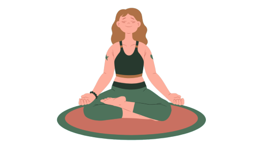

O cuidado com a saúde mental é essencial
em todos os momentos da vida, pois influencia
não só no mental, mas também na saúde física,
impactando
diretamente na qualidade de vida da pessoa,
no seu raciocínio, emoções, comportamentos e
na maneira como se relaciona com os outros.

Os transtornos mentais geralmente são caracterizados por
uma combinação de emoções, comportamentos, percepções e
pensamentos que podem afetar a vida de uma pessoa.
Para identificar um Transtorno Mental é importante ficar
atento ao comportamento do indivíduo, que pode apresentar sinais como:
O ideal é que, ao apresentar esses sinais,
é importante que o indivíduo busque ajuda profissional para
um diagnóstico preciso, de preferência um Médico Psiquiatra
e um Psicólogo. Eles juntos, de acordo com uma minuciosa
avaliação, poderão dar o diagnóstico e prognóstico.
Citação de uma proficional da educação:
"Sou suspeita para falar sobre atividade física que está
muito ligada ao físico e a mente, acho fundamental
descobrirmos uma atividade que traga prazer, seja
um esporte, uma caminhada,ou andar de bicicleta...
o importante é movimentar e se sentir bem porque
além de todo benefício físico como aumento da massa
muscular, melhora na aptidão física ocorre também
a prevenção de doenças como colesterol alto, diabetes,
problemas cardiovasculares e até a depressão.
É comprovado que ao praticarmos exercícios nosso
organismo aumenta a produção de endorfina e serotonina
que são hormônios responsáveis pela sensação de prazer,
bem-estar, melhorando assim muito a nossa saúde mental.
Estamos vivendo uma época muito difícil onde o estresse,
a ansiedade tem aumentado a cada dia,
principalmente em crianças e adolescentes[...]"